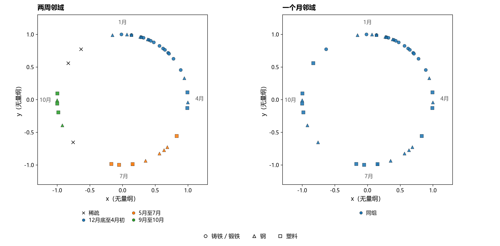
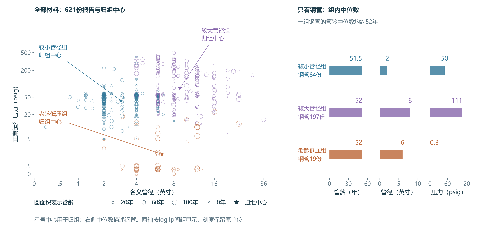

第一章发现，钢管与塑料管的伤亡报告率接近，铁管按管网规模计算的报告率较高。要明确检查与人员保护重点，还需要了解具体环境、设施条件和受伤任务。本章先研究施工损伤，再分析季节分布与设施规格。
2.1 施工损伤后的点燃与处置伤害
施工挖伤管道后，燃气企业还需查漏、停气和修复。明确人员保护重点，需要同时了解泄漏燃气的状态，以及人员受伤时正在做什么。本节先比较钢管与塑料管的开挖损坏报告，再核对原案中的处置任务。
在2010至2024年的主管道及主管道阀报告中，开挖损坏是钢管、塑料管共同最常见的原因，两组共391份。图 5分别按燃气是否被点燃、事故是否伴随伤亡分类，保留每种材料的完整计数。
塑料管开挖报告更常记录燃气点燃，伤亡多见于点燃组


两种材料的开挖报告数接近，伤亡报告却分别为6份和35份。塑料管记录燃气点燃的比例较高；在点燃报告内，两种材料的伤亡比例则为30%和32%，较为接近。总体伤亡差异还伴有点燃构成差异，复盘应具体核对燃气状态与现场活动。联合计数
人员保护的覆盖范围，要由受伤任务进一步确定。35份塑料管开挖伤亡报告中，有6份明确记载第三方先损伤管道，燃气公司人员随后在查找损伤、停气、安装旁通或修漏中受伤。2019年的一宗事故中，人员到场后，在夹断管道、停止气流期间发生点燃，三名装配工烧伤，其中一人住院。原案时序与引句
人员保护应延续到损伤后的查漏、停气、旁通和修漏阶段。企业复盘时应分别记录最初损伤者与后续处置人员，核对各阶段的燃气状态、人员位置和受伤时刻。
2.2 自然因素事故中的季节线索
检查环境条件，需要先了解历史事故在一年中的哪些时段集中。我们从2010至2024年三类材料主管道及主管道阀的693份报告中，提取原报告归为“自然因素”的全部42份，先看各月全貌，再将三种材料共同聚类，比较密集日期中有哪些材料。
铁管的自然因素报告集中在11月至次年3月


铁管15份自然因素报告都在11月至次年3月；钢管与塑料管在其余月份也有报告。为了从共同的日期分布中寻找密集段，我们用DBSCAN对全部42份一起归组，材料与伤亡留到分组后查看。
各年的发生月日对应到366天参考日历，日序记为t。令θ＝2π(t−1)／366，二维坐标为x＝sinθ、y＝cosθ，使年末与年初在图上相邻。两份报告i、j的距离定义为：
θ以弧度计，两轴与距离D均无量纲。邻域半径rw＝2sin(πw／366)，分别对应两周与一个月，即w＝14或31天；邻域内至少3份报告（含自身）的位置为核心点。这里的二维坐标共同表示同一个日期变量，邻近记录连接成组。完整距离与参数
两周邻域的跨年密集段以铁、钢为主



两周邻域下，12月底至4月初形成25份的密集组，其中23份为铁管或钢管；钢管与塑料管还出现在夏季、秋季的组中。将邻域放宽为一个月，全年42份连成一组。这个对照说明日期密集段可供继续查阅，但组的边界随邻域宽度变化。
结合逐月分布，铁管的冬季集中最清楚。原案进一步指向需要核对的地面条件：2014年的报告记录实测冻土，填报者认为断裂可能与冻胀有关；2015年的报告记载开挖后发现管道压在旧砖基础上，填报原因为土壤沉降。因此，企业检查现存铁管时，应结合冬季事故、安装维修史，核对当地冻土、沉降与管道支撑条件。
2.3 管龄、管径与压力的设施分组
季节分析补充了铁管的地面条件线索；企业为铁管、钢管和塑料管选择历史参照时，还需确认设施规格是否相近。同为钢管、使用年数接近，管径和正常运行压力仍可能相差很大。本节用管龄、管径和正常压力共同分组，检查材料名称之外还应核实哪些设施记录。
2010至2024年三类材料的693份报告中，623份管龄已知；排除两份缺少管径的阀门报告后，得到621份三项资料完整的主管道报告。K-means通过“就近归组—更新中心”的重复计算，寻找条件相近的组。管径和压力先作对数变换，缩小大值间距；三项输入再统一尺度，避免单位大小主导分组。材料与伤亡留到分组后比较。
同为钢管、相近管龄，设施的管径与压力仍有差别



图 8左侧每个点是一份真实报告，位置表示管径和压力，圆面积表示管龄；星号标出铁、钢、塑料共同分组得到的中心。右侧列出各组钢管的管龄、管径和正常压力中位数。三组钢管的管龄中位数都约52年，但管径与正常压力明显不同。同材料、相近管龄的设施，实际规格仍有明显差别。原单位分组画像
因此，企业以材料和管龄寻找相似事故时，还需核实管径与正常运行压力，进一步区分实际设施条件。三个输入与完整分组方法
2.4 检查与人员保护的结论
本章将第一章的类别差异落实到三类具体工作：施工损伤复盘要继续追踪停气、旁通与修漏阶段；铁管检查要结合冬季记录复核地面与支撑条件；选择历史参照要同时核实管龄、管径和正常压力。企业可以据此补齐事故复盘和设施清单中的关键信息，再结合当前泄漏、维修及现场测量安排检查与人员保护。
资料与计算说明
分析单位是一份事故报告，伤亡标记表示整起事故有死亡或住院至少一晚的伤害；报告数不等于伤者人数。逐份核对五类人员人数之和与总死亡、住院人数相同。公众和工作人员等的报告标记可以重叠。事故表的伤亡结局覆盖整起事故，人员受伤时的具体任务由原案另行核对。PHMSA填报说明 · 字段及可知时点
| 对照范围 | 报告数与用途 |
|---|---|
| 锁定全库 | 1,550份、369份伤亡，用于字段、人员定义和时间覆盖核对 |
| 原始部件为MAIN或SERVICE | 967份、174个运营商，用于部件与场地比较；不把阀门并入这两种部件 |
| 发生年2010—2024、MAIN或MAIN VALVE、钢／塑料／铸锻铁 | 693份、141份伤亡、141个运营商，用于材料原因、季节和设施条件比较 |
| 上述范围内钢塑开挖 | 391份，其中钢196、塑料195；共同正常压力范围为287份 |
| 三项物理资料完整 | 621份、125份伤亡；未插补安装年未知的70份和主管阀门管径空白的2份 |
上述比较均以已报告事故为研究对象。没有按季节或设施条件匹配的在用管网暴露量，也没有未发生事故的设施对照，不能估计全网事故发生率或每次维修的伤害概率。
部件、场地与人员
公共地点较多涉及工作人员，私人地点较多涉及公众


公共与私人地点分别比较MAIN和SERVICE，报告公众、工作人员等及两类重叠的计数。工作人员等是EMP、CONTR、ER、WORKER的并集，不简称为员工。公共进户管与主管道的整报告伤亡比例差为26.3个百分点，私人地点为−1.1个百分点；两个地点差值相减为27.3个百分点。既有分析按全部174个运营商共同重抽样5,000次，seed=202611061，95%探索性百分位区间为3.6至51.2个百分点。公共地点观察到的工作人员贡献较大，但“工作人员贡献减公众贡献”的区间跨零，不将观察排序写成已确立的总体排序。既有共同重抽样结果
材料核对限定为2021年及以前收到的全部塑料MAIN记录：私人公众伤亡12／35，公共9／136。原类别聚类用于发现比较入口，正文对照没有只挑选某一组成员。类别K-means按部件、材料、地点、地区等级独热编码，统一除以√8使四字段等权；早期1,286份形成中心，后期264份分配到固定中心。候选2—8组，每组至少65份早期报告，按早期平均轮廓系数选出8组，n_init=50、max_iter=500、seed=20261107。伤亡不参加编码、选组或拟合。实际联合属性与逐项众数分开，不能把组内典型属性拼成每份记录都满足的条件。场地是释放设施所在地点的报告分类，不是伤者室内外位置；这些对照也不识别场地对伤害的因果效应。原逐份类别分组与固定参数
主要原因分类与其他作业伤害
PHMSA主要原因是调查后填写的事故分类。“开挖损坏”涵盖挖掘、钻孔等活动造成的损伤，包括施工当时受损与旧施工损伤后的失效；“错误操作”涵盖运行、维护和维修中的操作问题。分类描述事故归因，损伤者身份和受伤任务由其他字段及叙述补充。原因分类说明，第33至37页
三种材料的全部事故原因与伤亡构成
钢管22份错误操作伤亡报告均涉及员工或承包商，其中五份未记录点燃，原案记有压力释放、堵头或碎屑伤人。部分案件的所报材料是原钢管，受伤发生于连接塑料替换段时。图中的主要原因分类与正文391份钢塑开挖专题分别解释，具体过程保留在已审读的原案。
开挖、规格构成与原案时序
391份钢塑开挖报告按材料、整报告点燃标记和整报告伤亡交叉计数。Sankey是字段构成图，不表示每份报告均已核实点燃先于伤害。共同点燃构成采用合并样本的120／391点燃、271／391未点燃份额，再分别乘各材料在两个状态中的伤亡比例后求和。塑料减钢的原始伤亡比例差为14.9个百分点，共同构成差为2.8个百分点。这是构成重算，既未建立点燃的因果中介模型，也未估计更换材料或控制点火的干预效果。物理原理和具体伤害机制须另由过程证据支持，算法不补出原案没有记载的动作。复算表
规格对照保留正常表压1＜pressure≤60 psig，共287份，钢101、塑料186。名义管径分为≤2、＞2且≤4、＞4英寸，合并权重固定为83／287、89／287、115／287。按各材料各档点燃比例重算后，点燃差由36.8缩至21.2个百分点。既有分析在88个运营商内保留同一抽样权重，重复10,000次，seed=5021108；三档全部抽样均有有效单元，差值95%探索区间为11.6至31.7个百分点。原四档方案有486次空单元抽样，保留为审计记录，不用其略不同结果替换三档正文。重加权没有逐条匹配压力，也不能消除未测量的作业和现场差别。三档原计数 · 核对后的既有区间
按共同管径构成比较后，钢与塑料的点燃比例差缩小


原案机制沿用已完成的57份审读：塑料开挖伤亡35份、钢管错误操作伤亡22份，其中55份有可用事故经过；另两份分别缺所引用附件、仅有补报说明。明确连接第三方先损伤与运营商后续作业伤害的六例，与仅有抢修场景的两例分开。既有109条引句已逐条匹配原始TXT，本轮另核对12份代表性时序及其12条支持原句。它们用于确认“谁在什么任务中受伤”，不将员工身份、最终原因或未知顺序自动编码成作业阶段。完整既有审读 · 本轮时序与未知项
三种材料共同参与的日期聚类
研究范围为2010至2024年三类材料主管道及主管道阀693份报告，按原主要原因字段NATURAL FORCE DAMAGE提取全部42份，铁15、钢17、塑料10。所有材料共同拟合，材料、原因细项、伤亡与冬季标签用于分组后的解释。参考日历采用2000闰年以保留2月29日，日序t取1至366；各年相同月日对应同一位置。
θ＝2π(t−1)／366，x＝sinθ，y＝cosθ。实际DBSCAN输入为这两个坐标，采用欧氏距离，半径为rw＝2sin(πw／366)，最低3份含自身。两轴来自同一个季节日期变量；图形为日期表示，地理位置没有参加分组。材料用点型区分、归组用颜色区分，重复月日原位重合。
两周与一个月沿用既有参数复查中的14天和31天，分别展示，不依据想得到的材料结论选择“最优”半径。14天得到25、9、5份三组与3份稀疏点；25份组从12月23日至4月9日，铁14、钢9、塑料2。31天则42份全部同组。组可通过邻近记录接续，整体跨度可以超过邻域半径。完整复查保留14、31、45天与最低3、4、5份的9种设置。完整参数对照 · 各组构成与日期
核对圆周日差d＝min(｜ti−tj｜,366−｜ti−tj｜)与二维弦长D的关系为D＝2sin(πd／366)。全部1,764个有序记录对的邻接、DBSCAN标签和核心点在两种实现中一致。浮点比较加入1e−12绝对容差，以计入恰在14或31天边界上的记录；输入按日序、报告编号排序，无随机抽样。坐标、标签与核心点 · 环境、公式与核验
本轮在既有月份观察后，用同一批报告做合并探索。密集段描述时间分布，冻土、沉降与支撑条件由原案另行核对。固定冬季比较仍采用11月至次年3月，铁管自然因素为15／37，其余月份0／16；合并聚类的日期范围用于解释组别，与固定季节比较各有用途。3份稀疏点全部保留，其中铁管与塑料各有1份伴随伤亡。全部设置的逐份记录 · 原季节计数
python p332_calendar_pool.py --input p332_season_input_693.csv --output season_results
冬季铁管的两种结局
冬季固定为11月至次年3月，以LOCAL_DATETIME的发生月份定义；不搜索有利月份边界。自然因素与整报告伤亡分别计算，不先限定15份自然因素再推断全部铁管。铁管冬季自然因素15／37、其余月0／16；伤亡为16／37与6／16。铁管自然因素15份来自12个运营商，逐个去除运营商后构成差仍为37.1—45.5个百分点。伤亡差5.7个百分点的运营商重抽样95%区间为−27.7至38.0个百分点。P320采用2,000次共同重抽样、seed=320；Wilson区间仅作为独立报告假设下的参考。所有区间为探索性，未作多重比较校正。
P320固定L2逻辑回归比较基础信息、加入冬季、再加入冬季×材料。基础信息为材料、发生年份、地点和MAIN／MAIN VALVE；C=1、solver=lbfgs、max_iter=2,000、tol=1e−8、无类别加权、seed=320。发生年只在训练数据标准化，地点字典也只在训练数据形成。五折GroupKFold以运营商分组、shuffle=True、random_state=320，三种输入及两种结局使用相同折；没有按效果调参。下表复用已完成结果，log loss越低越好，AP越高越好。
| 输入 | 自然因素：运营商分组 log loss／AP | 自然因素：后期 log loss／AP | 伤亡：运营商分组 log loss／AP | 伤亡：后期 log loss／AP |
|---|---|---|---|---|
| 基础 | 0.2079／0.2629 | 0.1854／0.2499 | 0.4896／0.3004 | 0.3894／0.2781 |
| 加冬季 | 0.2080／0.2859 | 0.1846／0.2487 | 0.4900／0.3009 | 0.3887／0.3052 |
| 加冬季×材料 | 0.2016／0.2865 | 0.1829／0.2515 | 0.4927／0.2957 | 0.3885／0.3205 |
这里的后期按发生年切分，2010—2021年586份训练，2022—2024年107份检验，后期只有5份自然因素、15份伤亡、6份铁管；52个后期运营商中44个在训练期出现。这里按事故发生年验证季节线索，区别于收件年分期。季节对自然因素识别有小幅增量，伤亡排序却未同时通过时期和运营商分组检验。季节线索用于复核自然因素及环境条件，整报告伤亡的季节差异仍未确定。零自然因素的非冬季16份不表示该季节不会发生自然因素事故。模型逐份结果与参数 · 两种分期核对
管龄、管径与正常压力的分组方法
管龄为发生年减安装年，接受有限且非负值；管径须大于零，正常压力非负，明确零值保留。管径和压力先取log1p，再与管龄一起按早期均值、标准差标准化。按收件年分出早期521份与后期100份；仅在早期比较k=2—8，KMeans采用k-means++、n_init=50、max_iter=500、algorithm=lloyd、seed=20261109，以平均轮廓系数最大者为准、同分取较少组。三组0.3293与四组0.3239接近，三组只是本次便于描述的选择，不是唯一自然分类。
材料、原因和伤亡不参加物理分组。后期只分配到冻结中心，本轮用原转换和中心逐份重建621份标签，全部与保存结果一致。三组全期计数322、241、58，钢管各组管龄中位数51.5、52、52年，管径与压力中位数明显不同。图的坐标是原物理量及原单位刻度，不是PCA分量；管龄为圆面积，重叠点不代表独立重复测量。复核画像 · 原冻结方案
聚类的实际分组与计算过程
部件、材料、地点和地区等级的类别聚类用于定位相似事故。下图保存实际归组与计算过程，正文的场地比较扩展到同部件、同材料的全部报告。
按部件、材料、地点与地区等级形成八组事故


管龄、管径和正常运行压力参加物理聚类。图中同时显示实际三维输入、选组依据和固定中心归类；正文二维点图则以原单位说明设施条件。
管龄、管径与正常压力的实际分组过程